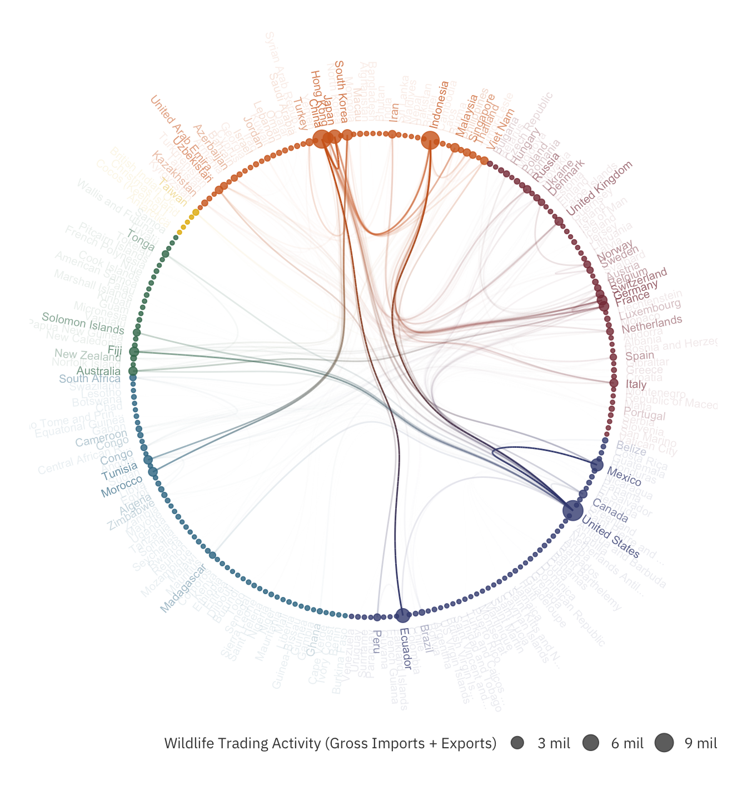

To run the PageRank algorithm, we need to model the wildlife trade as a network, with the countries represented as vertices. Two countries are connected by an edge if the two trade with one another. The degree of wildlife trading between two countries defines the weight of the edge. For the purposes of this study, we will use the sum of imports and exports as the edges’ weights.
Using the above definitions, we are now equipped to model the wildlife trade for the period of 2001 to 2015:
max_label_char <- 20
vertices <- unique(c(dataset$Importer,dataset$Exporter)) %>%
sort() %>%
{ data.frame(index=.)} %>%
inner_join(world_borders@data, by=c("index"="ISO2")) %>%
# Create labels that truncate names
mutate(NAME_SHORT = ifelse(nchar(NAME) >= max_label_char, sprintf("%s...",substr(NAME,1,max_label_char - 3)), NAME),
REGION = paste0("REGION-",REGION),
SUBREGION = paste0("SUBREGION-",SUBREGION)) %>%
arrange(REGION, SUBREGION)
edges <- dataset %>%
filter(Importer %in% vertices$index &
Exporter %in% vertices$index &
Importer != Exporter) %>%
mutate(v1 = ifelse(Importer < Exporter, Importer, Exporter),
v2 = ifelse(Importer < Exporter, Exporter, Importer)) %>%
group_by(v1,v2) %>%
summarise(total_trades = sum(Qty))
# Calculate imports + exports of each country
vertices$VALUE <- sapply(vertices$index, function(i) { sum(edges[edges$v1 == i | edges$v2 == i,]$total_trades) })
# Filter Top X Countries If Necessary
input_vertices <- vertices
input_edges <- edges %>% filter(v1 %in% input_vertices$index & v2 %in% input_vertices$index)
# Huge thanks to R Graph Gallery for Template
# https://www.r-graph-gallery.com/hierarchical-edge-bundling/
# Create Inputs For The Model
# Color palette for edges and input_vertices
color_dictionary <- get_color("palette")(length(unique(input_vertices$REGION)))
names(color_dictionary) <- unique(input_vertices$REGION)
n_points <- 100
# Graph Creation
hierarchy <- rbind(input_vertices %>% mutate(parent="root") %>% select(parent,child=REGION) %>% unique(),
input_vertices %>% select(parent=REGION,child=SUBREGION) %>% unique(),
input_vertices %>% select(parent=SUBREGION, child=index))
# Node Specifications
nodes <- data.frame(name = unique(c(as.character(hierarchy$parent), as.character(hierarchy$child)))) %>%
left_join(input_vertices %>% select(index, label=NAME_SHORT, region=REGION, value=VALUE), by=c("name"="index")) %>%
mutate(ranking=rank(value,ties.method="first"))
# Edge Specifications
connections <- data.frame(from=match(input_edges$v1, nodes$name),
to=match(input_edges$v2, nodes$name),
weights=input_edges$total_trades)
total_trade_min_cutoff <- quantile(input_edges$total_trades, 0.5)
total_trade_max_cutoff <- quantile(input_edges$total_trades, 0.999)
connections$alpha <- lapply(1:nrow(input_edges),
function(i) {
a <- max(min((input_edges$total_trades[i] - total_trade_min_cutoff) / (total_trade_max_cutoff - total_trade_min_cutoff),1.),0.)
list(rep(a,n_points))})
connections$colors <- lapply(1:nrow(input_edges),
function(i) {
v1 <- input_edges[[i,"v1"]]
v2 <- input_edges[[i,"v2"]]
# Set up colors
region_v1 <- (input_vertices %>% filter(index == v1))$REGION
region_v2 <- (input_vertices %>% filter(index == v2))$REGION
list(colorRampPalette(c(color_dictionary[[region_v1]],color_dictionary[[region_v2]]))(n_points))
})
# Plot the Graph
edge_bundle_graph <-graph_from_data_frame(hierarchy, vertices = nodes)
edge_bundle_plot <- ggraph(edge_bundle_graph, layout="dendrogram", circular=TRUE) +
theme_void() +
theme_lk(TRUE, TRUE, FALSE, FALSE)
# Add Edge Bundles
# There is a bug in ggraph_1.0.0.9999 where geom_conn_bundle can only plot at most 2 nodes of from before messing up the coloring,
# we will fix this by generating geom_conn_bundle one node at a time
for (v1 in unique(connections$from)) {
tmp <- connections %>% filter(from == v1)
edge_bundle_plot <- edge_bundle_plot +
geom_conn_bundle(data=get_con(from = tmp$from, to = tmp$to),
colour=unlist(tmp$colors),
alpha=unlist(tmp$alpha),
n = n_points,
tension = 0.8)
}
# Adjust the angle and horizontal alignment of nodes based on the position of x and y
edge_bundle_plot$data["angle"] <- sapply(1:nrow(edge_bundle_plot$data),
function (i) {
t_ratio <- min(max(edge_bundle_plot$data$y[i] / edge_bundle_plot$data$x[i], -10000),10000)
atan(t_ratio) * 180 / pi
})
edge_bundle_plot$data["hjust"] <- sapply(edge_bundle_plot$data$x,
function (x) {
ifelse(x < 0, 1, 0)
})
# Add Node Points
edge_bundle_plot <- edge_bundle_plot +
# Create Nodes
geom_node_point(aes(filter = leaf, x = x, y=y, colour=region, size=value), alpha=0.8) +
geom_node_text(aes(filter = leaf, x = x*1.05, y=y*1.05,
colour=region, label=label, alpha=ranking,
angle=angle, hjust=hjust), size=2.5) +
scale_size_continuous(name="Wildlife Trading Activity (Gross Imports + Exports)",
label=function (v) { sprintf("%.0f mil",v/1000000)},
guide=guide_legend(override.aes = list(color=txt_color, alpha=0.8))) +
scale_color_manual(values=color_dictionary, guide="none") +
scale_alpha_continuous(limits=c(max(nodes$ranking)-100,max(nodes$ranking)-10), na.value=0.1, guide="none") +
# Make sure labels are viewable
expand_limits(x = c(-1.25, 1.25), y = c(-1.25, 1.25))
edge_bundle_plot
The hierarchical edge bundle plot shows the degree of involvement of each country. The larger the circle, the greater the total imports and exports of the country. Unsurprisingly, United States, China and Indonesia have the highest total imports and exports.
Other than that, we can also identify the most popular trade routes. The larger the wildlife trading, the higher the opacity of that edge. The chart above surfaces some overlooked routes, such as Ecuador to China.